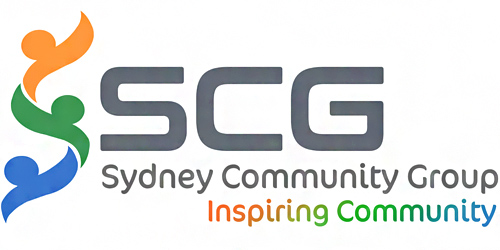

|
Sydney Community Group, a Women's initiative and a registered Incorporated not for Profit Community organisation works to help Communities across Sydney and Australia’s operates through group of Women volunteers who are highly skilled, passionate and dedicated, professional, mums working in different organisations and various fields. SCG team works on various community projects related to Senior citizens, Women Welfare, Youth, kids, migrant community and many more.
|